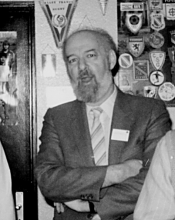

Please note: the AAS Obituaries are temporarily being hosted on this website while their full content is being ingested into the PubPub publishing platform newly adopted by the Bulletin of the American Astronomical Society. When the migration is complete, your existing links will take you to the final, migrated content. Contact peter.williams@aas.org with any questions.
Carlos Jaschek (1926-1999)
Carlos Jaschek died in Salamanca, Spain on April 12th, 1999. He was born in 1926 in Brieg, Germany (now Brzeg, Poland), but emigrated to Argentina with his parents at the age of 11. He began work at La Plata Observatory in 1947 and obtained his PhD in astronomy in 1952.
Returning in 1957 from a year in the United States, he was appointed Professor of Astrophysics and Director of the Astrophysics Department at La Plata University, holding these positions until his move to Europe in 1973. During this period, Jaschek spent time at Perkins, Yerkes, Michigan, Ohio State, and other observatories and astronomy departments, developing contacts and collaborations in spectroscopy that lasted through his life.
After a year at Geneva, Carlos became director of the Center de Données Stellaires (CDS) in Strasbourg (now the Center de Données astronomiques de Strasbourg) in succession to Jean Jung. He held the directorship until 1990, and was instrumental in organizing world-wide access to astronomical data with special sensitivity to third-world countries. Jaschek simultaneous held Associate and later Full Professorships at Louis Pasteur University, until retiring to Salamanca.
Jaschek's forte, expressed in some 250 refereed publications, including atlases, catalogues, and reference books, was precise observation and careful classification of peculiar stars, emphasizing MK classification as a guide to astrophysics and a statistical approach to stellar populations. Carlos and his wife Mercedes Jaschek collaborated on the understanding of Be, Ap, shell, and other peculiar stars. They later worked on the first classification schemes in the ultraviolet (using data from TDl S2/68 and later IDE) and with Yvette Andrillat on determination of fundamental properties of Ae, Be, and shell stars with near infrared data. Carlos was an active member of the International Astronomical Union and served as President of Commission 45 (spectral classification) from 1973 to 1976. His interest in stellar classification led him to a long-term collaboration with Marcel Golay's group in Geneva, comparing photometric and spectroscopic methods. He anticipated the replacement of human classifiers by automated methods, and encouraged many of the recent developments in that area. Jaschek also supervised many students and organized an impressive number of colloquia and meetings, many the first of their kind, relating to data centers and emerging technologies for statistical analysis, international networks, large databases, and digitized surveys. His book on data in astronomy (though pre-Internet) remains required reading for anyone interested in the field. Jaschek continued past his retirement to present astronomy to the public, publishing a book based on his Strasbourg University lectures on ethno-astronomy in 1998, and creating a working group on "astronomy and human sciences." The memory of Carlos Jaschek cannot be separated from that of his wife, Mercedes, who spent her whole astronomical career beside him. They shared most of their work on spectroscopy of peculiar stars, and he was deeply affected by her death in November, 1995. Many of us will always remember the warm welcome Mercedes and Carlos Jaschek reserved for their guests, colleagues, and students.
Obituary written by: Daniel Egret (Strasbourg Observatory), Andre Heck (Strasbourg Observatory)
BAAS Citation: BAAS, 1999, 31, 1602
SAO/NASA ADS Bibcode: 1999BAAS...31.1602E